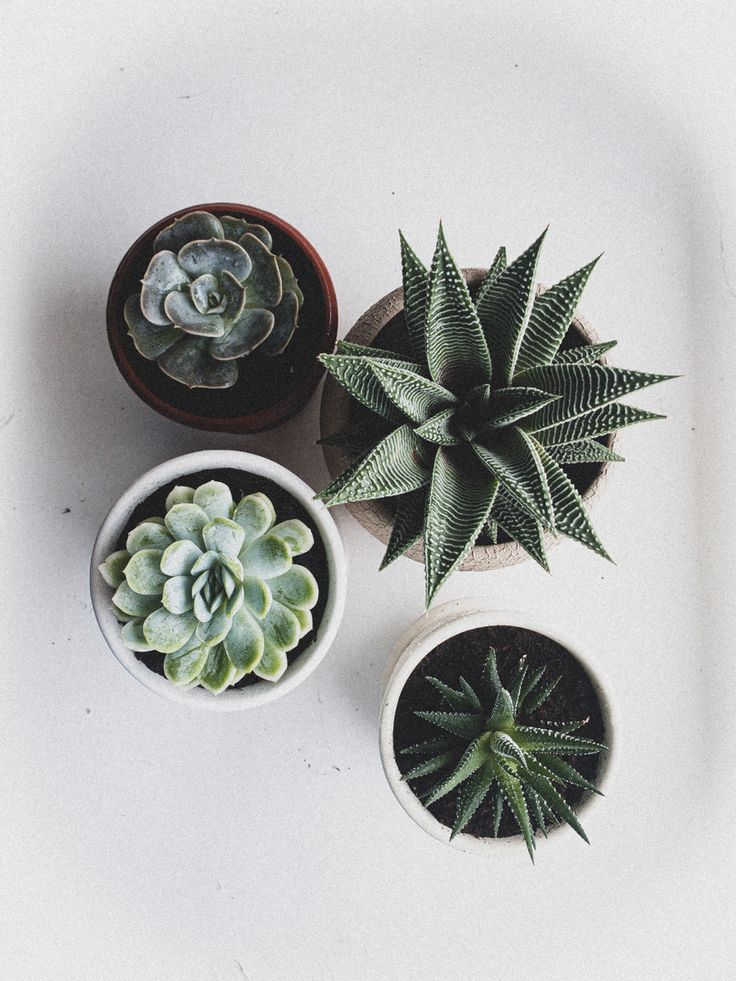

Суккуленты — это удивительные растения, которые запасают воду в своих листьях, стеблях или корнях. Они неприхотливы, красивы и прекрасно подходят для дома, даже если вы начинающий растениевод.

Начните знакомство с раздела «О суккулентах» или сразу переходите к выбору растения